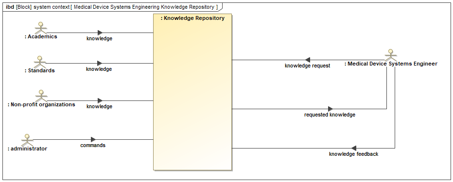

11 Goals and Objectives
The report published on this website is a draft and subject to frequent updates. Please be aware that the content may change over time as revisions are made. Thank you for your understanding.
If you have questions, comments, or feedback, please contact Esteban Solorzano.
Section 11.1 provides the list of active, passive and sponsor stakeholders of the programmable playground system. Section 11.2 provides the list of stakeholder expectations that are classified as either capability or characteristic. Section 11.3 extracts which stakeholder expectations are considered sacred. Section 11.4 provides the system objectives. Section 11.5 explains the concept of operations of the system.
11.1 Stakeholders
| ID | Stakeholder | Description | Type [active, passive, sponsor] |
|---|---|---|---|
| STH0001 | Medical Device Systems Engineer | Oversees the systems engineering of a medical device during its lifecycle, from initial concept and development, through regulatory approval and market launch, to ongoing sustaining and improvement. Primary user of the Medical Device Systems Engineering Knowledge Repository. |
active |
| STH0002 | Regulatory Compliance Officer | Also referred to as a Quality Regulatory Compliance Officer (QRCO), is a role that ensures a company’s medical devices are developed, manufactured, and marketed according to all applicable regulations. | passive |
| STH0003 | Quality Assurance Professional | Ensures medical devices meet quality standards from design to production. | passive |
| STH0004 | Research and Development Team | Group responsible for creating new and innovative medical devices. This team typically consists of a variety of specialists, including engineers, scientists, and researchers. | sponsor |
| STH0005 | Clinical Specialist | Serves as a bridge between the manufacturer and healthcare providers. Typically has a background in healthcare and technology. | passive |
| STH0006 | Product Manager | Manages the lifecycle of a medical device, from initial concept and development, through regulatory approval and market launch, to ongoing management and improvement. | passive |
| STH0007 | Healthcare Professionals and Patients | Users and end users of medical devices | passive |
| STH0008 | Administrators and Decision Maker | The administrator of the Medical Device Systems Engineering Knowledge Repository. | active |
11.2 Stakeholders expectations
Stakeholder expectations were elicited from the stakeholders and documented in Table 11.3. The stakeholders were interviewed and/or surveyed to record their expectations. Not all stakeholders were addressed directly, this was case of the medical device regulatory bodies. Published medical device regulations were consulted to determine what are the expectations of the Regulatory Bodies.
| ID | Expectation Title | Expectation Description | Source Stakeholder | Validation Method |
| STK0001 | STK1 Knowledge Access | Access to comprehensive and up-to-date knowledge related to medical device systems engineering. | Medical Device Systems Engineers | Demonstration |
| STK0002 | STK2 Regulatory Information | Access to regulatory standards, guidelines, and documentation relevant to medical device systems engineering. | Regulatory Compliance Officers | Demonstration |
| STK0003 | STK3 Quality Management | Information on quality management systems, validation, verification, and testing methodologies for medical devices. | Quality Assurance Professionals | Demonstration |
| STK0004 | STK4 Research and Innovation | Access to research papers, patents, and emerging technologies in medical device systems engineering. | Research and Development Teams | Demonstration |
| STK0005 | STK5 Clinical Requirements | Knowledge of clinical requirements, usability considerations, and human factors engineering in medical device design. | Clinical Specialists | Demonstration |
| STK0006 | STK6 Market Insights | Insights into market trends, customer needs, and competitive analysis for medical devices. | Product Managers | Demonstration |
| STK0007 | STK7 Safe and Effective Devices | Safe and effective medical devices that meet their clinical needs and preferences. | Healthcare Professionals and Patients | Analysis |
| STK0008 | STK8 Repository Management | Oversight and management of the knowledge repository, including resource allocation and performance monitoring. | Administrators and Decision Makers | Demonstration |
| STK0009 | STK9 Content Type | Variety of content type such as articles, videos, interactive content. | Medical Device Systems Engineers | Inspection |
11.3 Sacred expectations
Table 11.3 shows the stakeholder expectations determines as “sacred”.
| Stakeholder expectation ID | Expectation Title | Expectation Description |
|---|---|---|
11.4 Objectives
Table 11.4 provides the list of the system objectives.
| ID | Objective |
|---|---|
| OBJ0001 | Design a system that will compile and synthesize knowledge and best practices related to systems engineering in medical device development. |
| OBJ0002 | Provide a comprehensive resource that educates professionals and students in the field of systems engineering about the unique challenges and considerations specific to medical devices. |
| OBJ0003 | Offer practical guidance and tools for applying systems engineering principles throughout the entire lifecycle of medical device development. |
| OBJ0004 | Foster a deeper understanding of the regulatory requirements and standards governing medical devices and how they intersect with systems engineering processes. |
11.5 Concept of Operations
This section defines the system context for the MedSE knowledge repository. The analysis employs a SysML block definition diagram.
A context diagram is a diagram that defines the boundary between the system, or part of a system, and its environment, showing the entities that interact with it. (“System Context Diagram” 2019)
The context diagram shows the system’s inputs and outputs and sets a baseline for developing the internal architecture (Larson et al. 2009). Context is what surrounds the system. It contains entities that are “just on the outside of the system” but are relevant to it (Crawley, Cameron, and Selva 2015).
Figure 11.1 is a SysML diagram of the system context for the Medical Device Systems Engineering Knowledge Repository. It depicts the system and its interaction with external entities.

The following is a breakdown of the system context diagram:
Blocks:
Knowledge Repository: This is the central block of the system, which stores medical device systems engineering knowledge.
Medical Device Systems Engineer: This block represents the users of the system who can request knowledge from the repository.
Administrator: This block represents the system administrator who can manage the knowledge repository, including adding, updating, and deleting knowledge.
Standards Organizations: This block represents external organizations that provide medical device systems engineering standards and regulations.
Academics: This block represents academic institutions that contribute medical device systems engineering knowledge to the repository.
Non-Profit Organizations: This block represents non-profit organizations that contribute medical device systems engineering knowledge to the repository.
Flows:
Knowledge: This flow shows the knowledge that is stored in the repository. It goes in two directions, indicating that knowledge can be added to the repository and retrieved from it.
Knowledge Request: This flow shows the request for knowledge from a medical device systems engineer to the knowledge repository.
Commands: This flow shows the commands issued by the administrator to manage the knowledge repository.
Knowledge Feedback: This flow shows the feedback provided by a medical device systems engineer on the knowledge retrieved from the repository. This feedback loop allows for improvement of the knowledge repository over time.